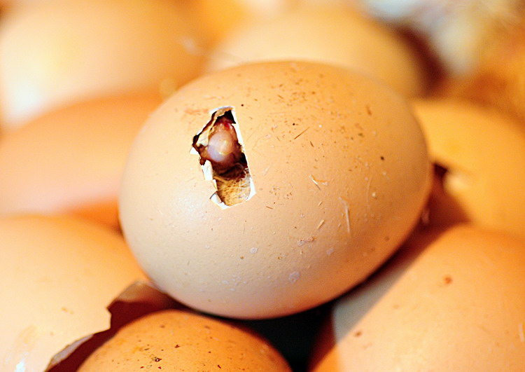
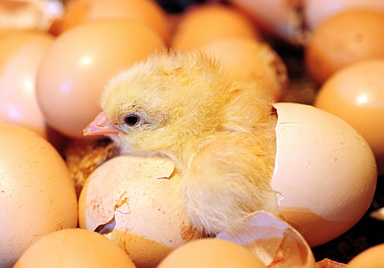
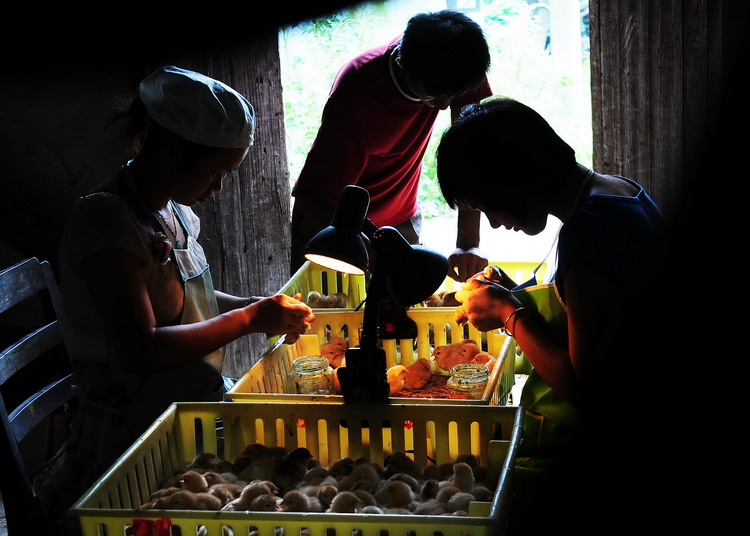
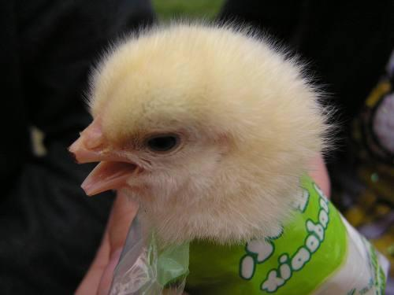
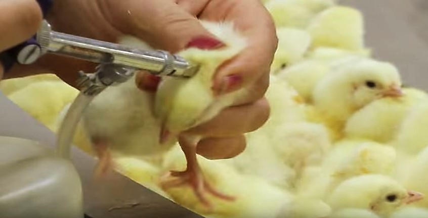
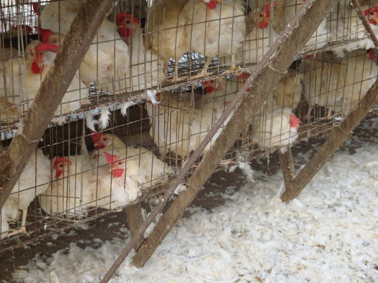

-
從蛋到雞，21天的美麗孕育
20天後，孵化成型的雛雞便用尖尖的嘴巴自行破殼 
雛雞經施打"馬立克病疫苗"及"雌雄鑑別後"分類裝箱運往雞舍
雛雞抵達雞舍前1.舍內鋪上乾淨且品質佳的墊料，準備好保溫設備在抵達前24小時開始加溫
2.檢查照明設備完全正常運作
3.給飼設備正常能使雞能輕易獲得飼料
4.檢查水杯確定雞飲水正常
-
1日
飼料在 0–8 週時應飼餵「小雞料」，小母雞隨著生長階段的不同，所需要的養分也不同。各階段採時間長短視何時可達到該階段體重為基準，體重一達到就要換料。
光照24小時光照，光照強度10勒克斯以上。
-
3日
光照逐日降低光照時間至16小時，光照強度降至5-7.5勒克斯。
-
7日
育雛圍籬當用傳統式保溫傘育雛時，育雛圍籬宜用硬紙板、夾板、金屬、塑膠等堅固材料，可保護雛雞不受賊風侵襲。到6-7日齡以上視天氣狀況即可撤除。
-
10日
剪喙剪嘴是蛋雞的重要工作，為的是阻止雞隻互啄及飼料浪費，應慎重執行。過度剪嘴會造成廢雞，剪嘴不足造成啄肛、啄毛，死亡率增加及終身飼料的浪費。

-
14日
施打疫苗第2週至第4週之間，施打華氏囊炎、新城雞病、傳染性支氣管炎疫苗。

-
15日
光照光照時數降至9-10小時、光照強度降至5-7.5勒克斯。
-
28日
體重第4週至第18週之間，最好每週，最多間隔2週，對雞隻個體秤重，以了解雞群體重及性成熟是否正常。
-
49日
飼料將飼料更換為「中雞料」。
-
56日
施打疫苗第8週至第12週之間，施打雞痘、雞腦脊隨炎、傳染性支氣管炎、新城雞病疫苗。
-
91日
飼料將飼料更換為「大雞料」。
-
119日
飼料將飼料更換為「預產料」。
光照光照時數增至13小時，以後每週增加1小時的光照時數直到光照時數為16小時止。
血清學檢測在17-18週所有防疫皆完成後做血清抗體檢測，所得到的數據可讓我們對產蛋前雞群免疫狀況做評估，作為判斷雞群是否有感染的參考。
-
126日
移至產蛋舍
飼料將飼料更換為「產蛋高峰料」。
設備每隻雞最少要有310平方公分的活動面積，此面積可發揮出最大生產效益及最大經濟效益。
-
189日
體重27週齡後每隔兩週秤重一次，目的在於知道雞隻體重及蛋重是否穩定增加。直至36週齡後平均體重會穩定微幅增加，體重在標準內穩定增加代表雞隻營養平衡，如此才能發揮出最大生產性能。
-
252日
飼料產蛋高峰過後，當產蛋率下跌5%之後約一兩週要改換飼料。
-
441日
強制換羽雞群生產到63週後強制換羽。只要能夠給予雞隻好的管理及營養他到80週齡前產蛋及蛋殼品質都很好，但若蛋價變化必須換羽才能獲得好價格時，就會強制換羽。方法是停止餵食持續1-2週或更久，甚至停止供水，藉以改變母雞的激素周期，使母雞停止下蛋，待羽毛脫落後，再恢復正常餵食供水，從而提高產蛋率。
